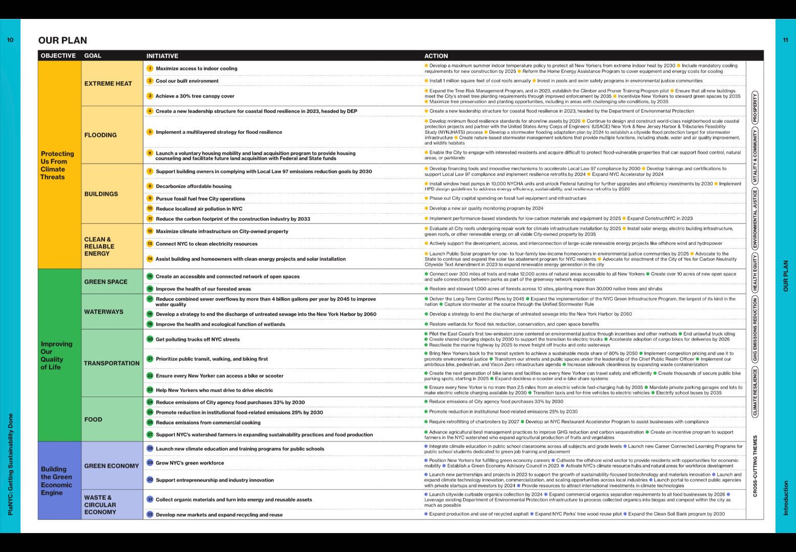
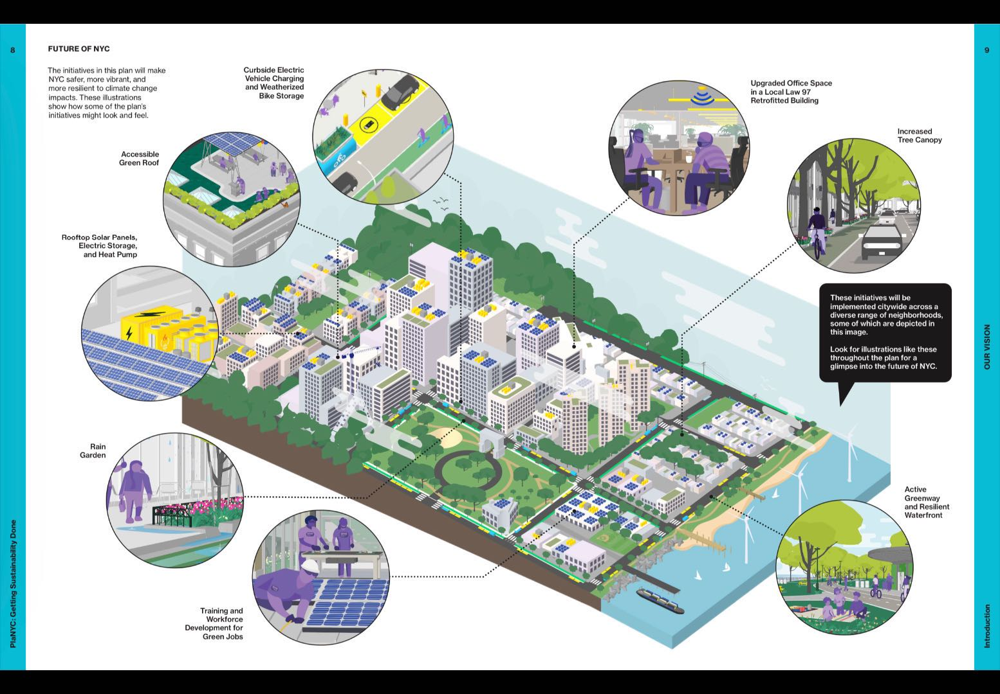

week4
1 New York City - Extreme heat disasters due to the urban heat island effect
1.1 summary
Like other dense urban areas, New York Cityis warmer than its rural and suburban surroundings. As greenhouse gas emissions cause the planet to warm, New York City will experience more frequent, longer-lasting, and more intense heat waves. There could be up to 6x as many days above 90 degrees per year by the 2080s and up to 5x as many heatwaves by the 2080s. Sustained exposure to high temperatures can harm public health, including dehydration, heat exhaustion, heat stroke, and even death. Extreme heat is the leading cause of weather-related fatalities across the country. In New York City, on average each year, there are approximately 370 heat-related deaths. But all heat deaths are preventable.(New York City’s Mayor’s Office of Climate and Environmental Justice, n.d.)
While heat affects all New Yorkers, some feel the effects more intensely than others. For example, older New Yorkers are highly susceptible to heat-related illnesses, and black New Yorkers are twice as likely as white New Yorkers to die from heat stress.(New York City Department of Health and Mental Hygiene, 2014)
According to the 2022 New York City Heat-Related Mortality Report, 81% of home heat stroke-related deaths occur in homes without air conditioning. While more than 90 percent of city households reported having air conditioning in 2017, usage in certain communities was as low as 76 percent.
Outdoor heat risks are also exacerbated in certain parts of the city, where black pavements, dark grey buildings, and tree-less streets add to the urban heat island effect, making streets hotter and more dangerous on hot days.
As climate change and heat waves become more frequent and intense, heat-related health risks will only increase, and controlling urban temperatures to avoid extreme heat is imminent. This includes combating extreme indoor heat and reducing the public realm heat island effect.
1.2 Metropolitan policy
PlaNYC: Getting Sustainability Done
PlaNYC: Getting Sustainability Done is an action plan to build a cleaner, greener, and more just city for all, proactively addressing decades of economic and environmental injustice to achieve a fairer, healthier, and more resilient future. The plan will help ensure that every New Yorker is climate-proofed, has an improved quality of life, and can take advantage of the more than 230,000 green economy jobs that New York City will provide by 2030.
The plan is divided into three main goal chapters, and the following is a table of specific plan profiles:

The chart below visualizes some of the measures that specifically address climate change and the expected effects.

In one of the three chapters, Protecting Us From Climate Threats, specific strategies are proposed to address extreme heat:
A. Maximize access to indoor cooling:
• Develop a maximum summer indoor temperature policy to protect all New Yorkers from extreme indoor heat by 2030
• Include mandatory cooling requirements for new construction by 2025
• Reform the Home Energy Assistance Program to cover equipment and energy costs for cooling
B. Cool our built environment:
• Install 1 million square feet of cool roofs annually
• Invest in pools and swim safety programs in environmental justice communities
C. Achieve a 30% tree canopy cover:
• Expand the Tree Risk Management Program, and in 2023, establish the Climber and Pruner Training Program pilot
• Ensure that all new buildings meet the City’s street tree planting requirements through improved enforcement by 2035
• Incentivize New Yorkers to steward green spaces by 2035 • Maximize tree preservation and planting opportunities, including in areas with challenging site conditions, by 2035
1.3 Application
The following describes the application of several types of data that may be used:
A. Extreme Heat Vulnerability Index (EHVI): The EHVI is a fused dataset consisting of census data and remotely sensed variables, which are examined in relation to geocoded mortality data.
Development of spatially specific vulnerability models that are useful for decision support during extreme heat events (EHE). Findings on such spatially explicit models lead to efforts in preparing for and mitigating heat-related vulnerabilities and potential adaptations. It helps government departments to analyse the causes of heat-related vulnerability and develop relevant support policies. Emphasis is currently being placed on the development of spatially specific vulnerability models, which are useful for decision support during extreme heat events (EHE). Research results concerning such spatially-explicit models lead efforts in preparation and mitigation of heat-related vulnerability and potential adaptation.
B. Monitoring greening rates using NDVI data
C. To measure surface temperature using infrared remote sensing data, the following Lansets are commonly used: AVHRR; HCMM; Ground-based thermal scanner; ATLAS.
D.This is in addition to calculating estimated tree canopy cover in urban areas based on aerial imagery and machine learning algorithms; and estimated emissions from heating, cooling and power equipment in residential and non-residential buildings based on Google Maps data. ## reflection ## Reference list
[1]New York City’s Mayor’s Office of Climate and Environmental Justice. n.d. Extreme Heat. Available at: https://climate.cityofnewyork.us/challenges/extreme-heat/ [2]New York City Department of Health and Mental Hygiene, 2014. Epi Data Brief, August 14. Available at: https://www.nyc.gov/assets/doh/downloads/pdf/epi/databrief47.pdf [3]City of New York Government, 2022. 2022 New York City Heat-Related Mortality Report. Available at: https://nyccas.cityofnewyork.us/nyccas2022/ [4]New York City Department of Health, 2022. 2022 New York City Heat-Related Mortality Report. Available at: https://nyccas.cityofnewyork.us/nyccas2022/report/1